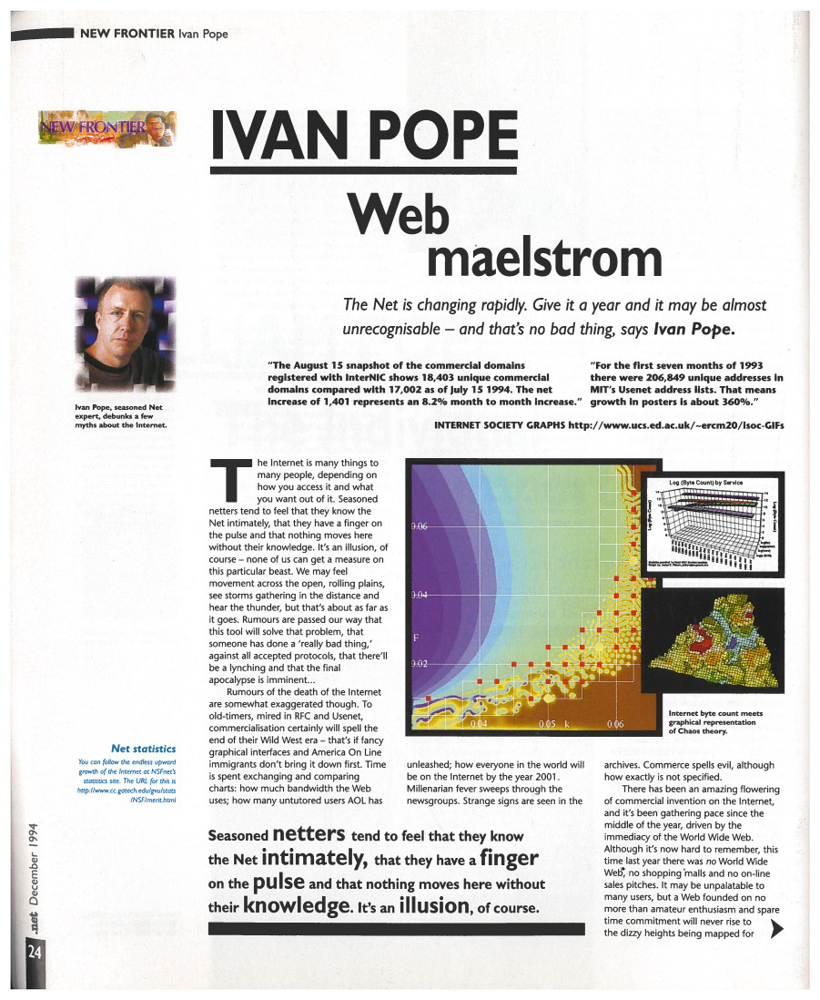
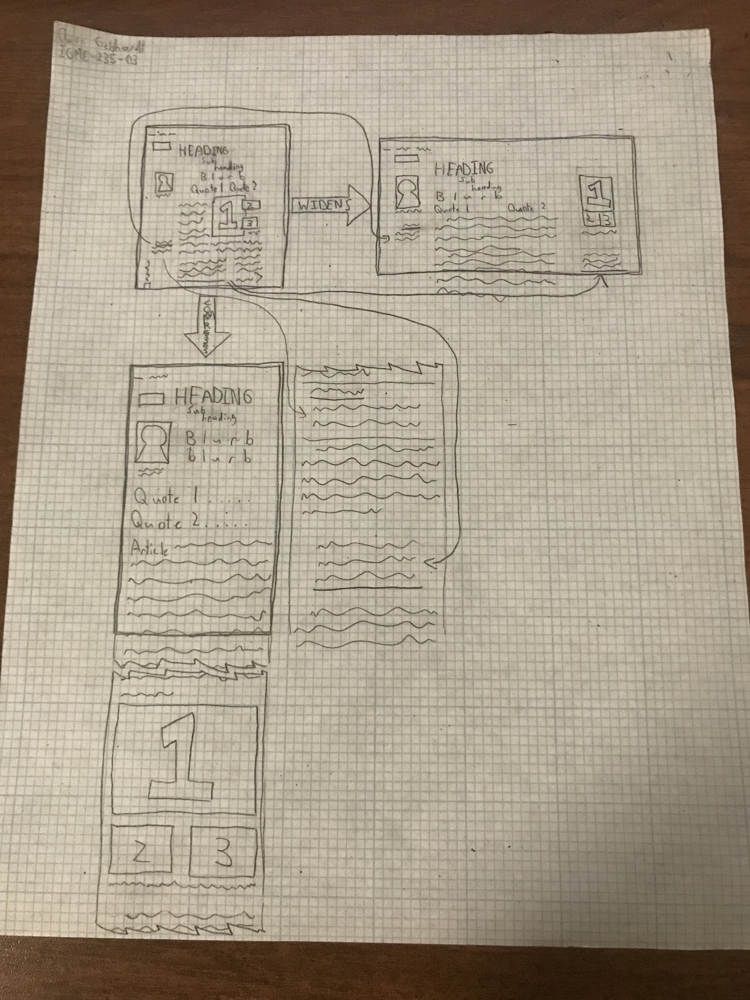

I'm planning on making my site a standard portfolio, since that seems like the quickest and most useful thing I could make right now. I'm planning on duplicating the main article section three times so I can put a different project in each one, with screenshots from each project filling in for the images shown.
This is the article I ended up deciding to copy. The page follows a clean grid layout, and I thought it'd be fun to set up the floating images on the right.
Click here to go to the PDF file.
On Tuesday night (10/4) I spent some time drafting up an outline of the page. I made it pretty comprehensive too, including pretty much every guideline and padding line I could find.
On Thursday morning (10/6) I used my class time to organize some of the HTML on the page that I'd be fitting into the document.
Later that night I finished putting all necessary HTML tags into the doc, with enough information to hopefully allow me to setup the grid correctly.
Starting Friday morning and working well into Saturday morning, I finally finished the build to spec phase! I think it turned out well for the most part, though I am disappointed that I couldn't find a way to get text in a column layout to wrap around images, which caused me to need ot change my HTML too.
You can view the site after the Build to Spec phase here.
Here's the diagram I made to show how I'll make things responsive later on. I ended up deviating from it quite a bit to make the site how I wanted in Phase 2, but it was a good start for thinking about how to make it change.
I didn't really work on this project again until Thursday, when we started critiques. The main feedback on my page was that it was copied quite well from the original document, but that the lack of responsiveness was an issue. Many also noted that the font size was too small to read.
For Friday, I decided I wanted to get the page at least responsive and nice to look at within the dimensions of the original PDF, then work on getting wide and thin variants prepared for Tuesday, and hopefully changing the content to something fitting for submitting on Wednesday.
I ended up not having time to finish the site by the time I expected because of needing to finish another project.
On Thursday night into Friday morning, I added some responsiveness to the webpage. I decided to expand upon it more in the afternoon.
Over Friday and Saturday I polished up the site to be completely responsive, with a few breakpoints to make page content flow better.
Finally, I added content to fill out the page to be a rudimentary portfolio.
This project will act as a portfolio for my web and game design career during my time at RIT. I intend for it to be seen by job recruiters for abilities.
For this phase of the project, I was allowed a 72 hour extension on my deadline by Professor Buonarota.
The CSS Reset file provided in an earlier exercise was used here to allow greater style control.
All text content was written by me.
Pages that helped me out:
Fonts used:
Now that I'll be using this site as my public-facing profile, I've updated it to include some of my more recent projects too. I've added Ten Grams of Tangrams, the Remix Tree Visualizer, and LiveWire; the first two as examples of web apps I'm proud of, and the third to describe some of my experience with working in a group.
I spent a few weeks writing up descriptions for the new projects I'd be putting up here, then spent another few weeks putting that text into the site. It ended up taking significantly longer than I had anticipated, particularly since I need to divide my time between this and coursework, but in the end I think I've made something worthwhile.